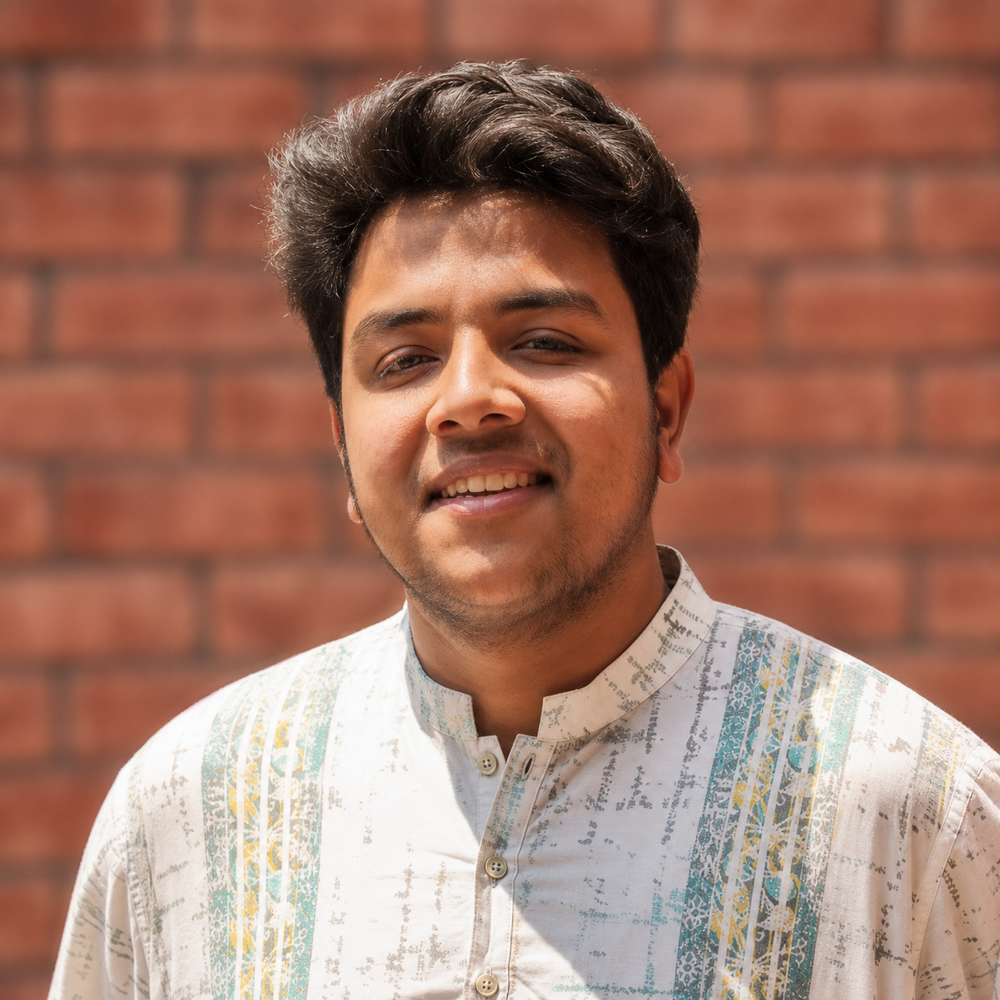
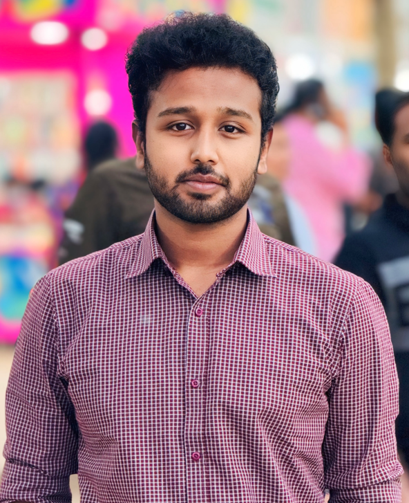
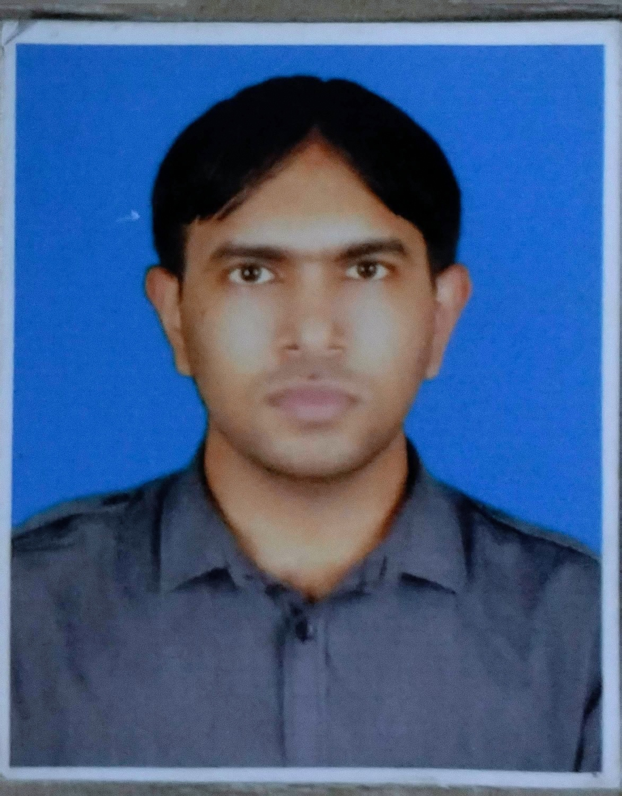
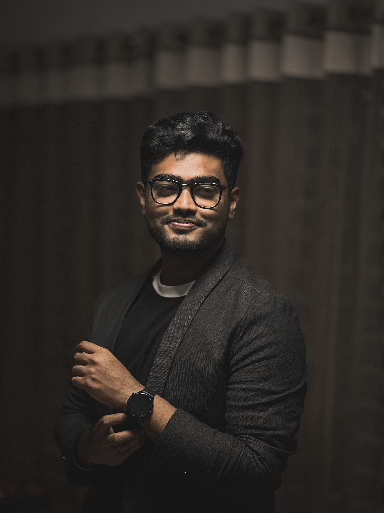

Damping & Acoustic Composites
Polymer-matrix composites engineered for vibration damping and sound absorption — MABS/VDT blends, SEBS-g-MAH compatibilizers, basalt-fiber reinforcement.
Selected work →
Assistant Professor at the Islamic University of Technology, Department of Mechanical and Production Engineering. Ph.D. from the Technical University of Denmark (2024), funded by GN, Demant and WS Audiology on composite materials engineered for acoustic damping. Previously a Mechanical Design Engineer at Novo Nordisk and Visiting Research Scholar at UMass Lowell.
We work across four overlapping threads in materials and mechanics — with a consistent bias toward problems that must also hold up in a factory, a classroom, and a peer-reviewed paper.
Polymer-matrix composites engineered for vibration damping and sound absorption — MABS/VDT blends, SEBS-g-MAH compatibilizers, basalt-fiber reinforcement.
Selected work →
Mechanical and moisture behavior of jute/carbon epoxy hybrids — stacking sequence, orientation, tensile, flexural and water-absorption response.
Selected work →
Twin-screw extrusion, injection molding, VARI and additive manufacturing — correlating processing with microstructure, rheology, TGA and DMA.
Selected work →
Low-carbon and bio-based feedstocks, life-cycle analysis coursework, and transferring composite methods into sustainable cementitious materials research.
Selected work →Data-driven modeling is an active research direction in our lab, connecting experimental datasets with predictive design and optimization.
Supervised models for tensile strength, damping, thermal behavior, and process-property relationships in composite and FDM systems.
ANN/RSM and constrained-learning workflows where empirical models are paired with physical understanding for robust parameter optimization.
FDM process optimization, skin-permeability prediction, hydraulic systems design, and nanocomposite formulation with uncertainty-aware evaluation.
The Sujon Lab welcomes undergraduate researchers, capstone teams, and graduate students interested in mechanical and materials engineering — regardless of background, gender, or prior experience. We believe excellence in engineering is built through hands-on practice and diverse perspectives.
Our work bridges industry practice and teaching. Techniques from pharmaceutical equipment design (Novo Nordisk) and hearing-aid polymer research (GN, Demant, WSA) are translated into student labs, capstone projects, and peer-reviewed research with real-world relevance.
I focus on turning advanced composite-material methods into practical impact through student research, industry collaboration, and robust experimental-to-simulation workflows.
Peer-reviewed journal articles, reviews and conference papers. Lab members appear highlighted.
Full list available on Google Scholar · CV (PDF)
Current IUT undergraduate thesis groups supervised in machine learning, polymer composites, thermodynamics-informed modeling, metamaterials, and nanocomposite characterization.
Topic: Temperature-dependent liquid density prediction by bridging data-driven graph neural networks with physics constraints.

Topic: Data-driven modeling and experimental validation of mechanical-property prediction in FDM using machine learning.

Topic: RDKit-integrated machine-learning framework for predicting skin permeability from molecular structure.


Topic: Predictive modeling of tensile strength in FDM-printed PLA and PLA-CF composites through hybrid machine learning.



Topic: Reproducible and verifiable autonomous design of Hermitian and non-Hermitian phononic metamaterials.



Topic: Machine-learning-driven optimization of polymer nanocomposites for heat-exchanger applications.

Topic: Effect of NiFe-LDH loading on mechanical, dynamic mechanical, and thermal properties of wood-flour-reinforced epoxy hybrid nanocomposites.


Undergraduate and graduate courses at the Department of Mechanical and Production Engineering, with active-learning formats and hands-on FEA labs in MATLAB and Abaqus.
Stress, strain, beam bending and torsion — with an Abaqus lab connecting analytical solutions to meshed reality.
Shafts, fasteners, bearings and gears — project-based CAD/FEA simulation and prototype testing.
Crystal structure to failure mechanisms, SEM reading sessions, ISO fatigue standards and AM cases.
Thin-walled and sandwich structures — buckling, torsion, and energy methods for aerospace efficiency.
Layup, lamination theory, VARI manufacturing and damage mechanics — with a capstone fabrication project.
Free-body diagrams, equilibrium, trusses — problem-based modules with weekly studio hours.
Teaching Mechanics of Materials, Machine Design, Composite Materials. Chair of Solid Mechanics curriculum committee. Secured $50k departmental grant for composites lab.
Designed and optimized pharmaceutical production equipment in SolidWorks, CATIA and Abaqus. Led continuous-improvement projects for reliability and sustainability.
Composite and thermoplastic materials for acoustic damping. Funded by GN, Demant and WS Audiology. Thesis: development of new composites and their industrial processing to improve acoustic properties.
Fiber-matrix composites for cementitious materials. TGA, DMA, tensile/impact testing, rheology and X-ray CT characterization.
Thesis: analysis of mechanical properties of jute and carbon fiber reinforced epoxy hybrid composite.
Foundations in mechanical engineering and materials science supporting advanced cementitious-materials research.
Core engineering courses and student research supervision — the pedagogical foundation I return to now as faculty.
Thesis: experimental investigation of LPG as an alternative to R134a in a domestic refrigerator.
Selected from an international pool of 125 candidates.
Consortium award for advanced-materials research at UMass Lowell.
7,500 DKK for presentation at the 38th PPS Conference.
Design competition hosted by ESAB.
12th place internationally — design and problem-solving team lead.
$50,000 secured for DIC and 3D printer — composites lab.
Simulation, characterization, fabrication, and data analysis tools used across research and teaching.
Moments from conferences, research stays, student activities and outreach — click any photo to view full size.
Open to research collaborations, industry consulting on composites and FEA, invited talks, and graduate-student inquiries. Email is the fastest way to reach me.
Dr. Md. Abu Shaid Sujon
Department of Mechanical and Production Engineering
Islamic University of Technology (IUT)
Board Bazar, Gazipur 1704
Dhaka, Bangladesh
Office Hours: Sun–Thu, 10:00 AM – 4:00 PM
New paper in preparation on basalt-fiber MABS hybrids — building on Compos. Sci. Technol. 2024.
Secured a $50,000 departmental grant to equip the IUT composites lab with a high-resolution DIC system and advanced 3D printer.
Led the inaugural IUT Capstone Project Showcase — 20 student teams, 10 industry judges, 150+ attendees.
Chaired the Solid Mechanics curriculum committee, integrating ISO fatigue standards and AM case studies.
Joined the Islamic University of Technology as Assistant Professor in the Department of Mechanical and Production Engineering.
Ph.D. defense: Development of new composites and their industrial processing to improve acoustic properties — Technical University of Denmark.
Paper published in Composites Science and Technology on MABS composites reinforced with basalt fibers.
Received the Otto Mønsted Foundation Award (7,500 DKK) for presentation at the 38th PPS Conference, St. Gallen.
Visiting Research Scholar at UMass Lowell, Plastic Engineering Dept. — fiber-matrix composites for cementitious materials.
Began Ph.D. at DTU, funded by GN, Demant and WS Audiology — selected from 125 international candidates.